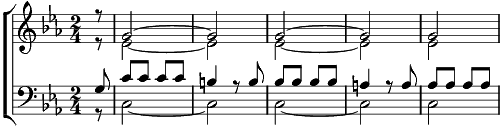

1. Je vais vous raconter, Ce qui m'est arrivé
Sous un ciel où l'été s'attarde,
O… O… O… Heureux je gard'
Un grand navire à quai, La foule débarquait
Deux yeux sous des bouquets regardent.
O… O… Mon cœur s'est mis à chanter
O… O… Si l'on est fou, Le ciel l'est plus que vous
O… O… Au Portugal en Avril ?
2. Le soir sous mes yeux clos, Glissant au fil de l'eau
Je vois par le hublot la rive,
O… O… O… Des chants m'arriv'nt
Tout ça berce mon cœur, D'un rêve de bonheur
Donbt les regrets ailleurs me suivent.
O… O… Peut-être un jour la revoir
O… O… Si l'on est fou, Le ciel l'est plus que vous
O… O… Au Portugal en Avril ?
Coda: Avril ……………… au Portugal